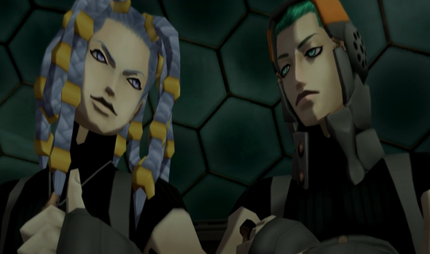

Original text from a now-defunct JP fansite
**Spoilers for Digital Devil Saga ahead!**
Naoya
Proximity of being a Persona and SMT fan... I was searching for the Sahsarara theme for a few years before playing the game, then bam, it autoplayed on Youtube after I was listening to the SMT3 OST.
I surprisingly don't have any strong feelings toward him in comparison to the other silent protagonists... I say that, but I used to draw Serph a lot when I was a kid.
Best guy ever who only (allegedly) listens to metal... I think that him liking the blues is more gap moe though... Nothing beats a male tsundere character :3c He's been my favorite character since I was a kid (Beat out recently by Gale though! O_o) I am a little disappointed with the direction they went with his character in DDS2. In DDS1, he's the first one to proclaim that Sera and the rest of the Junkyard members' histories don't matter, rather it's what they make of themselves now that counts, so regardless of what's happened in the past, it's the desire to protect each other that's most important. Well, that speech seems to go out the window when Heat betrays the Embryon in DDS2. Sure, he was being manipulated and only wanted to protect Sera by doing it, but I feel like DDS1 Heat would've said "Hell no!" and found a solution his own way. #NOTMYHEAT
I always think about Kaneko's notes about her being open about showing her scars to show how she's not ashamed about showing her weakness and overcoming hardships. That aspect about her has inspired a few of my OC's designs and characteristics. I saw someone say that their headcanon for Argilla's death animation, is that she hugs herself as a memory flashing back of all the past times she's hugged her comrades... I really like that T_T She's so sweet.
He used to be my least favorite character. I am not sure what happened but now he's climbed the ranks and totally knocked out Heat from the number 1 spot. I know that he's supposed to be a stand-in character that speaks Serph's dialogue, but that honestly just ended up making him 200000x more badass. Also, he's so cute when he wiggles in his idle stance. He's like a tree... I think the reason why I like him so much is because after he awakens, the most notable characteristics of him are his loyalty and devotion to others. These traits are the most important to me as an individual, so I hope I can be someone who can be relied on, just like Gale!
You can't be reasoning wit God bro! What's not to like about Cielo?! So charming and funny~ I wish his stat distribution was better in DDS1 though (totally didn't stop me from using him as my healer tho). I'm glad they made his stats better in DDS2, but I ended up just making Gale my Jack of All Trades Healer-Buffer-MagicDamager-Guy so I never used him except for the Vritra boss fight. I want to try to use him in my next playthrough. I love that they gave Cielo a Jamaican accent to reflect the playfulness of his JP voice. Honestly, it makes the English dub of DDS better than the original JP version in my opinion.
I don't like her English voice actor... It's a little disappointing because Atlus' localization team really went all out for DDS with everyone doing an absolutely PHENOMENAL job, but she had the weakest performance out of everyone despite being so major to the story (and the reason why everyone is fighting!). Also... take a shot every time Sera says "I'm sorry..." Never be sorry, my queen...
Nothingburger ass character, I'm sorry. As much as I love DDS my one complaint is that a lot of the Junkyard leaders are not expanded on and highly irrelevant, ESPECIALLY Harley.
I wish that she had more interactions with Argilla! I find it really cute how her and the Maribels have clown-looking makeup. Usas kinda looks like a chili pepper... That's the only thing I could think of. Her boss fight isn't very difficult either.
HATE THIS GUY! NEXT!
HATE THIS GUY! NEXT!
Same thing with Jinana for Argilla, but this time for Gale. Still not really sure how Lupa's death would evoke such a visceral reaction with Gale. I just speculate that since he has David's data, the kind-hearted and loving aspects of him were moved after having to kill someone as noble and upstanding as Lupa... Cerberus' design in DDS is still the coolest thing ever to me too. Although it ends up unused, it's neat how the three heads can combine and let Cerberus assume an aquatic form. I guess that's how he swam through the tunnels? His boss fight is also not that hard. Even though you shouldn't leave the middle head last, it's hard to do when it has the most HP. Nothing stacking buffs and abusing ice-weakness can't fix though.
Forgot to set Void-Force for the second part of his boss fight so he gave me a run for my money since I run Argilla as my healer in DDS1... Like the other Junkyard Leaders, his backstory exposition isn't particularly intriguing to me. Like ok, Beck's data flowed into him after getting killed by Real Varuna, but other than that, whatever. Not a really interesting guy. But his form as Ravana in the second phase is really cute. Maybe because I never raised my Luck stat, I always got hit by Hunger Wave. When I saw it was possible for only 1 member to get hit by it, I was like "really?" Every time, my entire party gets hit by it. It was a little bit challenging but not too bad.
Gale! Heat was always my favorite because when I was younger, I really liked male-characters with longer hair. Nowadays, I like really short hair or slicked back hair, which Gale has. Also, the droopy eyes make him cute. His nose is a little bit pink which makes me think he gets cold easily. Maybe that's really why Vayu has a poncho. ← (Delusion)
Bat... He looks cool but I don't like people without a spine.
Vayu (Gale!!)
Camazots (Bat again... I hate that guy...) Or Hayagriva. I think the arms being tucked into the torso looks a little stupid.
Hari-Hara, especially Vishnu mode. I wish I could've experienced the first two phases a little more because I would just Power Charge and blow her up with Ragnarok so I never got to actually experience her skill sets. Since I barely went magic on Serph, her final phase was kind of annoying because I didn't have the necessary Dyne skills to kill enough of the orbs before they'd regenerate, but after getting 2 down and having Gale and Argilla spam Ma-Dyne skills, it became super easy. I always go split Str and Ma on Serph, but the problem I had was not grinding the magic Mantras (too lazy).
I would get along with Cielo and Argilla, probably... I wish I could get along with Gale, but I think he would think I'm too stupid (pre-awakening at least...). Heat would think I'm a wimp. I think trying to talk to Serph would be awkward.
Cielo as a brother for sure! Maybe Argilla as an older sister~
Gale!!! It would be relaxing to hang out with Sera too. I think I would piss Gale off though because I would probably ask him to help me with schoolwork too much.
Cu Sith
No comment (take a guess).
Grenade launcher (can't aim a gun to save my life)
Something cute, I hope... I think I would turn into Pyro Jack :P But if I could really have any choice, I would turn into Metatron!!! It's my dream to be a robot.
The Brutes or the Wolves
The Embryon, duhhhh (Gale is there...)
The Solids
Embryon or Maribel!
I'd wanna be Heat so I could blow everyone up with Phys skills... But I wouldn't act like a dummy and push Serph into the EGG and go berserk!!! (Well then, I wouldn't really be Heat, would I...)
I used Serph, Gale, and Argilla in DDS1, and Serph, Gale, and Argilla again in DDS2. Then it was Sera, Gale, Cielo, then Sera, Serph, Gale. Lastly, Seraph, Gale, Argilla... Had no idea about the party member losses so... Gale and Cielo are the GOATs for not leaving you... Love Heat but never use him cuz I already go Phys build on Serph (Ragnarok awesomeness).
O_O Not really an imaginative person... I'd imagine everyday is fun though. I think that Gale wakes up the earliest and Cielo the latest... Eat some rations and then go to the strategy room for planning...? Gale seems to come up with battle strategies and negotiations, so I'd imagine that Serph at least manages logistics.
Jinana or Lupa
Don't really use items, but um, panacea or revival gem, I guess?
RAGNAROK!!!! For DDS2, probably Reincarnation or Pyriphlegethon.
Allure, or Dormina into Calm Death combo when your ENTIRE TEAM GETS HIT. Way to go, guys... or Mamudoon killing everyone (refuses to equip resist death).
The scene in DDS2 at the airport where Gale says "He loved people... and he loved you..." to Jenna in reference to him receiving David Gale's solar data (and thus, his memories). T_T I cried so hard...
Gale: "You're a good man, Serph. I'm proud to have met you. Now... What are your orders, leader?"
Gale: "I'll remain on your side, even if the whole world turns against you. It's pointless to hate people... I can help you carry the burden caused by the hatred of others. That should make it easier on you."
Gale once again showing why he's the best guy ever.
The camaraderie that the Embryon show to each other, and how compassionate they are to others despite the claims that they're "just data" or "monsters." I had a lot of fun with the introduction of Fred too, it was really cute seeing the other members of the Embryon comment on his growth. The last scene where their solar data ascend to the Sun made me happy too, because it means that they never really left us even when their physical bodies perished. The ending was soooo T_TTTTT Reincarnated Embryon is so kyuuuuuute!!! Especially when Jenna turns back and says "Don't worry, Fred!" I CRIED!!!!!
The deaths!!! Surprisingly, Johnny's dialogue is pretty sad too, even though he's just the vendor... He is crazy as shit for setting up shop in the hangar and then dying but he did it for the cause T_TTT
Hard to pick between the Wolves and the Maribels... I find the Solids really funny and charming too especially with the Hee-Ho brothers, but they've got that coward Mick as their leader X.X
Check my phone for messages... But generally, I'm always locked in.
I look at a guide only for enemy weaknesses when I get too lazy to find them out for myself. But I will strategize on my own for all the boss fights. I generally don't look at area guides, but I did get EXTREMELY LOST in the last room of DDS2 (had no idea you're supposed to go into the left portal every time to progress).
Don't think I could do it like Heat does... I definitely related the most to Argilla and her reluctance to eat.
I played almost everything translated up until around 2019, so newer translations like Giten Megami Tensei, for example, are things I have not gotten to. But I have played every Persona game, the mainline SMT games save for V and IV:A, Soul Hackers, DDS, Devil Survivor, Kuzunoha, Kyuuyaku Megami Tensei, If..., and stuff like that. I always sorta-kinda revisit the SMT games by listening to the OST or look at Kaneko's art again, but haven't actually replayed any of them since the first time I finished them. I think I'll finally take this year as an opportunity to revisit them again! (If I have time X.X).
GalexJenna and GalexCielo for sure... HeatxSerph used to be my favorite but ummm, newer things are in town...
Hee-homeboyz for life!!!
Obviously, newer JRPGs have outclassed DDS in terms of exposition, story-telling, character development, etc. Despite that, I'll always regard it as one of my favorite games and the ones nearest and dearest to my heart. Sometimes I forget about it since my interests always fluctuate in phases, but when I revisit it I always remember how much I love this game and everyone who is a part of it. Play it!
Don't have enough time for that ... I love the game, but not enough of a maniac to grind for Hito xD